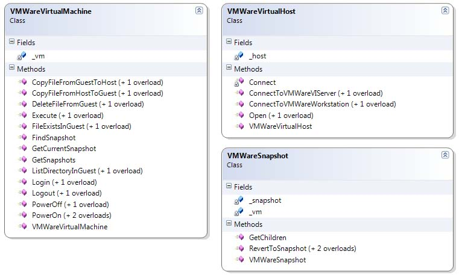

Title: Automating VMWare Tasks in C# with VIX API
Author: Daniel Doubrovkine
Email: dblock@dblock.org
Member ID: 913212
Language: C#
Platform: Windows, VMWare
Technology: C#, COM
Level: Intermediate
Description: A VMWare tasks library and primer
Section Suggest a section...
SubSection Suggest a subsection...
License: MIT
I've been playing with VMware lately, both Workstation and VMware Infrastructure (VI). The company has really stepped up with the new SDKs and the level of programmable interfaces, making some excellent implementation decisions that enable developers to drive virtual machines programmatically with an asynchronous, job-based programming model. Unfortunately that turns out to be too complicated for 99.9% of scenarios and most developers want to use a simple object-oriented interface for common VMWare tasks. The VMWareTasks library implements that interface and makes programming against virtual machine a no brainer. This article explains how to use the library and discusses some of its implementation details.
There're two types of VMWare APIs.
In order to use the library or build or run the source code you must install the following VMWare software.
In your project add a reference to Vestris.VMWareLib.dll and a namespace
reference.
using Vestris.VMWareLib;
You can now connect to a local VMWare Workstation or a remote ESX server and perform VMWare tasks. Here's an example that creates, restores, powers on and removes a snapshot on a VMWare Workstation.
// declare a virtual host
VMWareVirtualHost virtualHost = new VMWareVirtualHost();
// connect to a local (VMWare Workstation) virtual machine
virtualHost.ConnectToVMWareWorkstation();
// open an existing virtual machine
VMWareVirtualMachine virtualMachine = virtualHost.Open("C:\Virtual Machines\xp\xp.vmx");
// power on this virtual machine
virtualMachine.PowerOn();
// login to the virtual machine
virtualMachine.Login("Administrator", "password");
// run notepad
virtualMachine.RunProgramInGuest("notepad.exe", string.Empty);
// create a new snapshot
string name = "New Snapshot";
// take a snapshot at the current state
virtualMachine.Snapshots.CreateSnapshot(name, "test snapshot");
// power off
virtualMachine.PowerOff();
// find the newly created snapshot
VMWareSnapshot snapshot = virtualMachine.Snapshots.GetNamedSnapshot(name);
// revert to the new snapshot
snapshot.RevertToSnapshot();
// delete snapshot
snapshot.RemoveSnapshot();
The following sections describe VMWareTasks library implementation details. It's absolutely not necessary to understand those in order to use the library.
Connecting synchronously to either a local VMWare Workstation or an ESX server is virtually identical. The ESX server requires an URL to the SOAP SDK (eg. https://esxserver/sdk) and a username and password.
public IHost ConnectToVMWareWorkstation()
{
return Connect(Constants.VIX_SERVICEPROVIDER_VMWARE_WORKSTATION, string.Empty, 0, string.Empty, string.Empty);
}
public IHost ConnectToVMWareVIServer(string hostName, int hostPort, string username, string password)
{
return Connect(Constants.VIX_SERVICEPROVIDER_VMWARE_VI_SERVER, hostName, hostPort, username, password);
}
public IHost Connect(int hostType, string hostName, int hostPort, string username, string password)
{
VixLib vix = new VixLib();
IJob vmJob = vix.Connect(Constants.VIX_API_VERSION, hostType, hostName, hostPort, username, password, 0, null, null);
// You need to get the IHost object that represents the host where your VM is located.
// Since COM allocates the object you need to use this funky mechanism to extract the IHosts array.
object[] properties = { Constants.VIX_PROPERTY_JOB_RESULT_HANDLE };
// Wait for the operation to complete
object hosts = VmwareVixInterop.Wait(vmJob, properties);
object[] hostArray = hosts as object[];
return (IHost) hostArray[0];
}
You have to declare an array of properties that you want the job to produce, start a VMWare job and examine the results for the host handle. You can see how cumbersome this is! The API was originally designed for C, then extended to COM with a very limited object model: a number of interfaces were declared, but no corresponding COM classes have been implemented. Also, because the job interface is generic, there're no strongly typed results.
We can easily fill this gap in our C# implementation.
The first task for wrapping any API is to implement error handling. Our managed
implementation must translate error codes into managed exceptions. VIX API provides
an implementation for the IVixLib interface which contains a couple of helper methods
(very C-programmer). We'll be interested in IVixLib.ErrorIndicatesFailure
and IVixLib.GetErrorText combined with a new class, VMWareException.
public abstract class VMWareInterop
{
public static VixLib Instance = new VixLib();
public static void Check(ulong errCode)
{
if (Instance.ErrorIndicatesFailure(errCode))
{
throw new VMWareException(errCode);
}
}
}
Aside from the abstract VMWareInterop our goal is to produce concrete
classes that wrap various aspects of VMWare functionality.
VMWare COM API returns interface pointers such as ISnapshot. The objects also implement IVixHandle which gives access to a set of object properties. We will base-class everything on VMWareVixHandle.
public class VMWareVixHandle<T>
{
protected T _handle = default(T);
protected IVixHandle _vixhandle
{
get
{
return (IVixHandle) _handle;
}
}
public VMWareVixHandle()
{
}
public VMWareVixHandle(T handle)
{
_handle = handle;
}
public object[] GetProperties(object[] properties)
{
object result = null;
VMWareInterop.Check(_vixhandle.GetProperties(properties, ref result));
return (object[]) result;
}
public R GetProperty<R>(int propertyId)
{
object[] properties = { propertyId };
return (R) GetProperties(properties)[0];
}
}
Since all operations in VMWare are job-based, let's wrap up a job. If we use the
COM API directly we would have to call IVixLib.Wait passing a job handle.
In an object-oriented library this operation belongs inside the job, plus a job
is also a a VMWareVixHandle.
public class VMWareJob : VMWareVixHandle<IJob>
{
public VMWareJob(IJob job)
: base(job)
{
}
public void Wait()
{
VMWareInterop.Check(_handle.WaitWithoutResults());
}
}
One very common problem in VMWare API implementations that transform a asynchronous
job into a synchronous one is to use the blocking wait above. This is a bad design
decision since this call may never return. VMWare server may timeout or someone
can pull the network cable, leaving your program hanging. I originally wrote a busy
wait where all externally visible wait functions were based on the following
InternalWait.
private void InternalWait(int timeoutInSeconds)
{
if (timeoutInSeconds == 0)
{
throw new ArgumentOutOfRangeException("timeoutInSeconds");
}
// active wait for the job to finish
bool isComplete = false;
while (!isComplete && timeoutInSeconds > 0)
{
VMWareInterop.Check(_handle.CheckCompletion(out isComplete));
if (isComplete) break;
Thread.Sleep(1000);
timeoutInSeconds--;
}
if (timeoutInSeconds == 0)
{
throw new TimeoutException();
}
}
A more elegant implementation combines a callback mechanism provided by VixCOM with every asynchronous API and a blocking wait with a timeout. Wait is now signaled and there's no CPU spin waiting for completion of an asynchronous API call.
public class VMWareJobCallback : ICallback
{
#region ICallback Members
private EventWaitHandle _jobCompleted = new EventWaitHandle(
false, EventResetMode.ManualReset);
public void OnVixEvent(IJob job, int eventType, IVixHandle moreEventInfo)
{
switch (eventType)
{
case VixCOM.Constants.VIX_EVENTTYPE_JOB_COMPLETED:
_jobCompleted.Set();
break;
}
}
public bool TryWaitForCompletion(int timeoutInMilliseconds)
{
return _jobCompleted.WaitOne(timeoutInMilliseconds, false);
}
public void WaitForCompletion(int timeoutInMilliseconds)
{
if (!TryWaitForCompletion(timeoutInMilliseconds))
{
throw new TimeoutException();
}
}
#endregion
}
This and some generic code in VMWareJob can now be used inside
Connect. I have modified VMWareJob to require a VMWareCallback
in order to prevent callers from ever having a blocking wait.
VMWareJobCallback callback = new VMWareJobCallback();
VMWareJob job = new VMWareJob(VMWareInterop.Instance.Connect(
Constants.VIX_API_VERSION, Constants.VIX_SERVICEPROVIDER_VMWARE_SERVER, hostName, hostPort,
username, password, 0, null, callback), callback);
With VMWareJob and VMWareException it's now possible to
implement VMWareVirtualHost and connect to it. Note references to default
timeouts (a collection of constants) and some facilities in VMWareJob
that add strong typing into VMWare job results.
public class VMWareVirtualHost
{
private IHost _host = null;
public VMWareVirtualHost()
{
}
public void ConnectToVMWareWorkstation()
{
ConnectToVMWareWorkstation(VMWareInterop.Timeouts.ConnectTimeout);
}
public void ConnectToVMWareWorkstation(int timeoutInSeconds)
{
Connect(Constants.VIX_SERVICEPROVIDER_VMWARE_WORKSTATION,
string.Empty, 0, string.Empty, string.Empty, timeoutInSeconds);
}
private void Connect(int hostType, string hostName, int hostPort, string username, string password, int timeout)
{
int serviceProvider = (int)serviceProviderType;
VMWareJobCallback callback = new VMWareJobCallback();
VMWareJob job = new VMWareJob(VMWareInterop.Instance.Connect(
Constants.VIX_API_VERSION, serviceProvider, hostName, hostPort,
username, password, 0, null, callback), callback);
_handle = job.Wait
(Constants.VIX_PROPERTY_JOB_RESULT_HANDLE, timeout);
_serviceProviderType = serviceProviderType;
}
}
VMWareVirtualHost can now implement opening of an actual virtual machine
and return an instance of VMWareVirtualMachine.
public VMWareVirtualMachine Open(string fileName, int timeoutInSeconds)
{
VMWareJobCallback callback = new VMWareJobCallback();
VMWareJob job = new VMWareJob(_handle.OpenVM(fileName, callback), callback);
return new VMWareVirtualMachine(job.Wait
(
Constants.VIX_PROPERTY_JOB_RESULT_HANDLE,
timeoutInSeconds));
}
Based on this model we can code many functions of VMWareVirtualMachine,
VMWareSnapshot, etc. The rest is implementation details.

One of the peculiar VIX COM API constructs is the combination that returns arrays
of properties. This is done with two functions: GetNumProperties and
GetNthProperties. The first returns the number of property arrays returned
by the job and the second fetches a property array at a given index. The first obvious
step is to wrap the functions within the job class.
public T GetNthProperties<T>(int index, object[] properties)
{
object result = null;
VMWareInterop.Check(_handle.GetNthProperties(index, properties, ref result));
return (T) result;
}
public int GetNumProperties(int property)
{
return _handle.GetNumProperties(property);
}
We can now write such properties as RunningVirtualMachines.
public IEnumerable<VMWareVirtualMachine> RunningVirtualMachines
{
get
{
VMWareJobCallback callback = new VMWareJobCallback();
VMWareJob job = new VMWareJob(_handle.FindItems(
Constants.VIX_FIND_RUNNING_VMS, null, -1, callback),
callback);
object[] properties = { Constants.VIX_PROPERTY_FOUND_ITEM_LOCATION };
for (int i = 0; i < job.GetNumProperties((int) properties[0]); i++)
{
yield return this.Open(
(string) job.GetNthProperties<object[]>(i, properties)[0]);
}
}
}
This is nice, but still not good enough. Let's combine the number of results and
the results themselves in a YieldWait method.
public IEnumerable <object[]> YieldWait(object[] properties, int timeoutInSeconds)
{
Wait(timeoutInSeconds);
for (int i = 0; i < GetNumProperties((int)properties[0]); i++)
{
yield return GetNthProperties<object[]>(i, properties);
}
}
This results in a nice improvement over the previous implementation.
public IEnumerable<VMWareVirtualMachine> RunningVirtualMachines
{
get
{
VMWareJobCallback callback = new VMWareJobCallback();
VMWareJob job = new VMWareJob(_handle.FindItems(
Constants.VIX_FIND_RUNNING_VMS, null, -1, callback),
callback);
foreach (object[] runningVirtualMachine in job.YieldWait(properties, VMWareInterop.Timeouts.FindItemsTimeout))
{
yield return this.Open((string) runningVirtualMachine[0]);
}
}
}
Date/time in VMWare VIX is expressed in UNIX EPOCH (number of seconds since January 1st, 1970).
DateTime currentDateTime = new DateTime(1970, 1, 1, 0, 0, 0, 0).AddSeconds((int) dt);
This project lives on CodePlex at http://www.codeplex.com/vmwaretasks. You can find the latest information about this library at code.dblock.org. You're encouraged to submit patches for added functionality and bug fixes.
This library, along with any associated source code and files, is published under the MIT license./p>